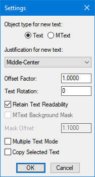
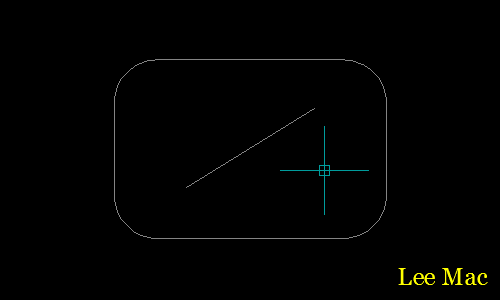

Align Text to Curve
This page is delivered for consistency purposes only, as part of the LeeMac sample module of DynALisp, which shows how DynALisp turns existing AutoLISP programs into a module. The program and its description are the work of Lee Mac, who keeps all the credit for them. The original page, with the latest version, is on Lee Mac's website: https://lee-mac.com/curvealignedtext.html
| Function Syntax | LM-AlignTextToCurve – original syntax: ATC (see aliases) |
| Current Version | 1.5 |
| Compatible with AutoCAD for Mac? | No |
| Compatible with AutoCAD LT? | Yes |
| This program is also available at the Autodesk Exchange App Store | |
| Original Page | lee-mac.com/curvealignedtext.html |
Program Description
This program enables the user to dynamically align a new or existing Text or MText object to a selected curve, with intuitive placement controls available at the command-line.
Upon issuing the command syntax ATC at the AutoCAD command-line, the user is prompted to select a Text or MText object to align. At this prompt, the user also has the option to create a new Text or MText object, or configure the program settings.
If the New option is chosen, the user is further prompted to enter the content for the new text object, or may press Enter to return to the previous prompt.
If the Settings option is chosen, the user is presented with a dialog interface through which several program parameters may be configured - these settings are detailed in the section below entitled: Program Settings.
The user is then prompted to select a curve to which the text will be dynamically aligned. The program is compatible for use with Lines, LWPolylines, 2D (Heavy) Polylines, 3D Polylines, Arcs, Circles, Ellipses, Elliptical Arcs & Splines; furthermore, these objects may be primary or nested (to any depth) within a block or xref.
Finally, the program will perform successfully under all UCS & View settings and with Annotative Text Styles.
Dynamic Text Alignment
Following valid selection of a curve, the new or existing Text or MText object is dynamically aligned to the curve based on the position of the AutoCAD cursor.
During text alignment, several controls are available at the command-line to refine the text position & other properties, such as rotation; these controls are individually detailed below:
| Text Alignment Controls | |
|---|---|
| Key | Action |
| Enter | (or Esc/Space/Right-Click) Exit program (Cancel) |
| Click | Place text |
| + / - | Incrementally increase/decrease text offset |
| O / o | Specify exact text offset |
| < / > | Rotate text by 45° |
| R / r | Specify exact text rotation (relative to curve) |
| Y / y | Toggle text readability |
| B / b | Toggle MText background mask |
Program Settings
Upon selecting the Settings option when prompted, the user is presented with the following dialog interface:
Settings Menu

Each of the above options are described individually below:
Object type for new text
This setting determines whether the program will create a single-line text (DText) object or multiline text (MText) object when the user opts to create new text.
Justification for new text
This setting controls the justification of any new text object created by the program.
Text Offset Factor
This is the default offset factor controlling the minimum distance of the text from the selected curve, as a multiple of the text height. This factor may also be zero if the text is to be positioned directly over the selected curve.
Text Rotation
This setting controls the default rotation of the text relative to the selected curve.
Text Readability
This toggle determines whether the text should be rotated to preserve readability, i.e. if enabled, the text will never appear upside-down.
Background Mask
This toggle controls whether a background mask is used when aligning MText objects.
Background Mask Offset
This setting controls the background mask offset when the background mask is enabled for MText objects and accepts a value between 1 & 5.
Multiple Text Mode
If this setting is enabled, the program will continuously generate text objects to align with the selected curve until the user exits the program.
Copy Selected Text
If this setting is enabled, the program will align a copy of the selected text object, else the selected object itself will be aligned to the selected curve.
Program Demonstration

Bundled program notes
;;----------------------=={ Align Text to Curve }==---------------------;;
;; ;;
;; ----------------------------------- ;;
;; Program Overview ;;
;; ----------------------------------- ;;
;; This program enables the user to dynamically align a new or ;;
;; existing Text or MText object to a selected curve, with intuitive ;;
;; placement controls available. ;;
;; ;;
;; ----------------------------------- ;;
;; User Input ;;
;; ----------------------------------- ;;
;; Upon issuing the command syntax 'atc' at the AutoCAD command-line, ;;
;; the user is prompted to select a Text or MText object to align. ;;
;; At this prompt, the user also has the option to create a new Text ;;
;; or MText object, or configure the program settings. ;;
;; ;;
;; If the 'New' option is chosen, the user is prompted to enter the ;;
;; content for the new text object, or may press 'Enter' to return to ;;
;; the previous prompt. ;;
;; ;;
;; If the 'Settings' option is chosen, the user is presented with a ;;
;; dialog interface through which several program parameters may be ;;
;; configured - these settings are detailed in the section below. ;;
;; ;;
;; The user is then prompted to select a curve to which the text will ;;
;; be dynamically aligned. The program is compatible for use with ;;
;; Lines, LWPolylines, 2D (Heavy) Polylines, 3D Polylines, Arcs, ;;
;; Circles, Ellipses, Elliptical Arcs & Splines; furthermore, these ;;
;; objects may be primary or nested (to any depth) within a block or ;;
;; xref. ;;
;; ;;
;; ----------------------------------- ;;
;; Dynamic Text Alignment ;;
;; ----------------------------------- ;;
;; Following valid selection of a curve, the new or existing Text or ;;
;; MText object is dynamically aligned to the curve based on the ;;
;; position of the AutoCAD cursor. ;;
;; ;;
;; During text alignment, several controls are available at the ;;
;; command-line to refine the text position & other properties; these ;;
;; controls are individually detailed below: ;;
;; ;;
;; [ Enter ] - (or Esc/Space/Right-Click) Exit program (Cancel) ;;
;; [ Click ] - Place text ;;
;; [ +/- ] - Incrementally increase/decrease text offset ;;
;; [ O ] - Specify exact text offset ;;
;; [ </> ] - Rotate text by 45 degrees ;;
;; [ R ] - Specify exact text rotation (relative to curve) ;;
;; [ Y ] - Toggle text readability ;;
;; [ B ] - Toggle MText Background Mask ;;
;; ;;
;; ----------------------------------- ;;
;; Program Settings ;;
;; ----------------------------------- ;;
;; Upon selecting the 'Settings' option when prompted, the user is ;;
;; presented with a dialog interface offering the following options: ;;
;; ;;
;; Object type for new text: this setting determines whether the ;;
;; program will create a single-line Text object or MText object when ;;
;; the user opts to create a new text. ;;
;; ;;
;; Justification for new text: this setting controls the justification ;;
;; of any new text object created by the program. ;;
;; ;;
;; Text Offset Factor: this is the default offset factor of the text ;;
;; from the selected curve, as a multiple of the text height. This ;;
;; factor may also be zero if the text is to be positioned directly ;;
;; over the selected curve. ;;
;; ;;
;; Text Rotation: this setting controls the default rotation of the ;;
;; text relative to the selected curve. ;;
;; ;;
;; Text Readability: this toggle determines whether the text should ;;
;; be rotated to preserve readability, i.e. the text will never appear ;;
;; upside-down. ;;
;; ;;
;; Background Mask: this toggle controls whether a background mask is ;;
;; used when aligning MText objects. ;;
;; ;;
;; Multiple Text Mode: if this setting is enabled, the program will ;;
;; continuously generate text objects to align with the selected curve ;;
;; until the user exits the program. ;;
;; ;;
;; ----------------------------------- ;;
;; Notes ;;
;; ----------------------------------- ;;
;; The program is compatible with all full versions of AutoCAD ;;
;; supporting Visual LISP with ActiveX (COM) functionality (that is, ;;
;; AutoCAD 2000 onwards on a Windows OS). ;;
;; ;;
;; The program will perform successfully under all UCS & View ;;
;; settings and with Annotative Text Styles. ;;
;; ;;
;;----------------------------------------------------------------------;;
;; Author: Lee Mac, Copyright © 2013 - www.lee-mac.com ;;
;;----------------------------------------------------------------------;;
;; Version 1.2 - 12-10-2013 ;;
;; ;;
;; First release - previously 'CurveAlignedTextV1-1.lsp'. ;;
;;----------------------------------------------------------------------;;
Command Names And Aliases
As in every DynALisp module, each program of this sample module has one main command, named LM-*, and the original command names of Lee Mac's page are kept as its aliases: they run the same command, and can be added, renamed or removed in Dyl-Suite (saved in Resources\Aliases.csv).
| Command | Aliases | Name |
|---|---|---|
| LM-AlignTextToCurve | ATC | Align Text To Curve |